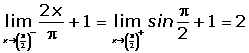
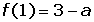

Derivative Problems
1Find the point in the function y = |x + 2| where it has no derivative. Justify the result by representing it graphically.
2Find the point in the function y = |x 2 − 5x + 6| where it has no derivative. Justify the result by representing it graphically.
3Study the continuity and differentiability of the function defined by:

4Given the function:
For what values of a is the function differentiable?
5Determine the values of a and b where the following function is continuous and differentiable:
6Determine the values of a and b for which the function is differentiable at all points:
7Find the points where y = 250 − |x² −1| has no derivative.
8Determine for which values of a and b the function is continuous and differentiable:
1
Find the point in the function y = |x + 2| where it has no derivative. Justify the result by representing it graphically.

The function is continuous.
f'(−2)− = −1f'(−2)+ = 1
It has no derivative at P(−2,0).

2
Find the point in the function y = |x 2 − 5x + 6| where it has no derivative. Justify the result by representing it graphically.


The function is continuous.
f'(2)- = −1f'(2)+ = 1
f'(3)- = −1f'(3)+ = 1
The function is not differentiable at: x = 2 and x = 3 or at points P1(2,0) and P2(3,0).
3
Study the continuity and differentiability of the function defined by:
The function is not continuous at x = 0 because it has no image. Therefore it is not differentiable.

The function is continuous.

The function is not differentiable at any point.
4
Given the function:
For what values of a is the function differentiable?


Differentiable at a = 1
For x = −1, it is not continuous.
5
Determine the values of a and b where the following function is continuous and differentiable:


6
Determine the values of a and b for which the function is differentiable at all points:
A differentiable function has to be continuous. In this case the function is not continuous for x = 0, that is to say, there are no values for a and b which make the function continuous.
Therefore, there are no values of a and b for which the function is differentiable.
7
Find the points where y = 250 − |x² −1| has no derivative.


The function is continuous.

Is not differentiable at x = −1 and x = 1.
8
Determine for which values of a and b the function is continuous and differentiable:


For a = −1 and b = 4, the function is continuous.

It is not differentiable at x = 0.
It is differentiable at x = 2.